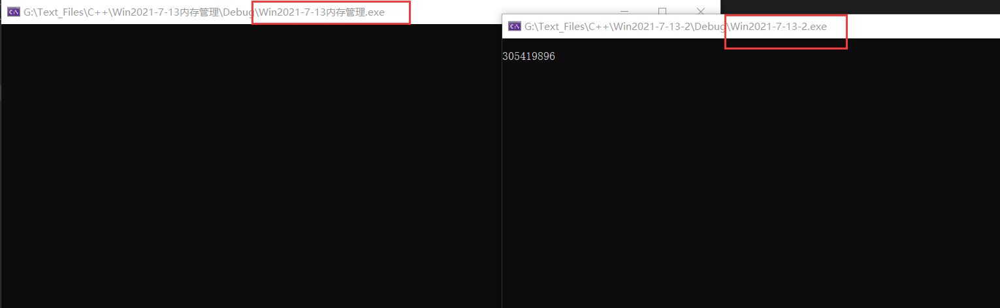

# 正文
私有内存：在进程本身的物理页中，只能进程本身使用。
共享内存：进程都可以使用。
# 私有内存申请 API
VirtualAllocvirtualAllocEx 在指定进程的虚拟空间保留或提交内存区域
LPVOID VirtualAlloc( | |
LPVOID lpAddress, | |
SIZE_T dwSize, | |
DWORD flAllocationType, | |
DWORD flProtect | |
) |
参数介绍：
- 申请内存的地址。可以指定地址，但是物理页我们不知道哪里的地址是否可用，所以一般为
NULL。 - 申请内存的大小。一般以页的整数倍进行申请，如：两页
0x1000*2。 - 申请内存的类型。
常用的有两种类型：MEM_RESERVE: 先申请线性内存，但不占用物理内存MEM_COMMIT: 占用线性内存和物理内存。 - 内存的状态。可读、可写、可执行。
# new malloc 的区别
真正申请内存的其实是 API。而 new malloc 是申请堆内存，new malloc 其实是在已申请的内存上面划分出一块虚拟内存。
new 关键字本质也就是 malloc + 构造函数。malloc 的底层是通过 HeapAlloc 申请的，并没有进 0 环。
# 共享内存申请
共享内存其实就是物理页共享使用，A 进程申请物理页并写入内容，B 进程可以读取。
HANDLE CreateFileMapping( | |
HANDLE hFile, | |
LPSECURITY_ATTRIBUTES lpAttributes, | |
DWORD flProtect, | |
DWORD dwMaximumSizeHigh, | |
DWORD dwMaximumSizeLow, | |
LPCTSTR lpName | |
) |
参数介绍:
- 文件映射。申请的物理页可以跟文件相映射，如果不需要文件只申请物理页则填
INVALID_HANDLE_VALUE。 - SD 安全属性，每个内核对象都需要的安全属性。
- 权限。你申请的这个物理页是可读的可写的还是可读写。
- 申请内存的高 32 位。windows 为了支持 64 位操作系统，所以给了高低 32 位来保存地址， 如果是 32 位地址，则不需要，填 NULL 即可.
- 低 32 位。你要申请的物理页内存的大小
- 进程共享物理页的名字。如果希望这个物理页其他进程可以使用，则需要给一个名字。
返回值：返回物理页句柄索引。
有创建物理页 也有打开物理页 主要是其他进程使用。
HANDLE OpenFileMapping( DWORD dwDesiredAccess, // access mode | |
BOOL bInheritHandle, // inherit flag | |
LPCTSTR lpName // object name); |
当然如果其他进程使用一样可以使用 CreateFileMaping，只不过会返回文件对象已经存在的错误。
# 线性地址 (虚拟地址) 关联物理页
我们还需要将这个物理页映射到线性地址。
需要的 API 如下
LPVOID MapViewOfFile( | |
HANDLE hFileMappingObject, // 物理页句柄 | |
DWORD dwDesiredAccess, // 线性地址访问权限。注意跟物理页最好一致，或者比物理页更低。 | |
DWORD dwFileOffsetHigh, // 映射线性地址的偏移位置 高 32 位 | |
DWORD dwFileOffsetLow, // 低 32 位 | |
SIZE_T dwNumberOfBytesToMap // 内存映射的字节数 | |
) |
# 关闭映射
BOOL WINAPI UnmapViewOfFile( | |
_In_LPCVOID lpBaseAddress // 指定要解除映射的一个文件映射的基准地址。这个地址是早先用 MapViewOfFile 函数获得的 | |
); |
返回值 Bool，非零表示成功，零表示失败。可以通过 GetLastError () 获取错误代码。
关闭物理页句柄用 CloseHandle()
# 实例
A 进程
#include<Windows.h> | |
#include <stdio.h> | |
#include <stdlib.h> | |
#define WIN32_LEAN_AND_MEAN | |
#define MapFileName L"共享内存" | |
#define M_Page 0x1000 | |
HANDLE g_hMapFile; | |
LPVOID g_lpBuff; | |
// 共享内存 | |
int main() { | |
// 获取内核对象 物理页 的句柄 | |
g_hMapFile = CreateFileMapping( | |
INVALID_HANDLE_VALUE, | |
NULL, | |
PAGE_READWRITE, | |
0, | |
M_Page, | |
MapFileName | |
); | |
g_lpBuff = MapViewOfFile( | |
g_hMapFile, | |
FILE_MAP_WRITE, | |
0, | |
0, | |
M_Page | |
); | |
*(PDWORD)g_lpBuff = 0x12345678; | |
getchar(); | |
UnmapViewOfFile(g_lpBuff); | |
CloseHandle(g_hMapFile); | |
return 0; | |
} |
B 进程
#include<Windows.h> | |
#include <stdio.h> | |
#include <stdlib.h> | |
#define WIN32_LEAN_AND_MEAN | |
#define MapFileName L"共享内存" | |
#define M_Page 0x1000 | |
HANDLE g_hMapFile; | |
LPVOID g_lpBuff; | |
// 共享内存 | |
int main() { | |
getchar(); | |
// 获取内核对象 物理页 的句柄 | |
g_hMapFile = CreateFileMapping( | |
INVALID_HANDLE_VALUE, | |
NULL, | |
PAGE_READWRITE, | |
0, | |
M_Page, | |
MapFileName | |
); | |
g_lpBuff = MapViewOfFile( | |
g_hMapFile, | |
FILE_MAP_WRITE, | |
0, | |
0, | |
M_Page | |
); | |
printf("%d", *(PDWORD)g_lpBuff); | |
getchar(); | |
UnmapViewOfFile(g_lpBuff); | |
CloseHandle(g_hMapFile); | |
return 0; | |
} |
A 进程写入，B 进程访问。
